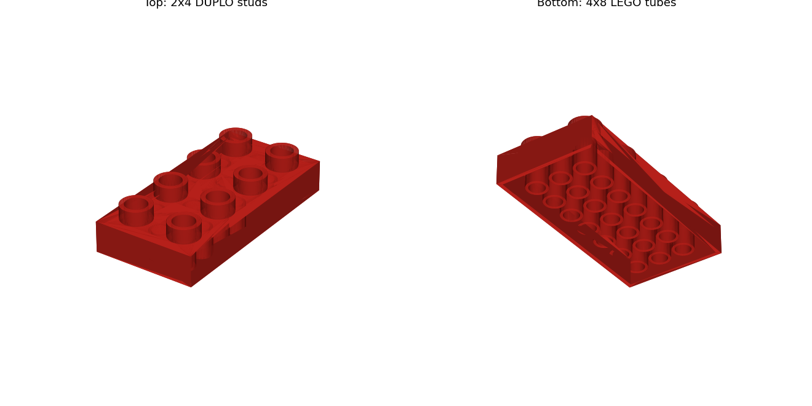

底部卡在一般 LEGO 凸點上、頂部長出 DUPLO 凸點的轉接磚，讓 LEGO 與 DUPLO 積木可以互相堆疊。

preview_4x8
| 類型 | 說明／下載 | 大小 |
|---|---|---|
| 3MF | 4×8 轉接磚（Bambu Studio 專案） lego4x8_duplo2x4.3mf | 251 KB |
| 3MF | 4×4 凸點試印，凸點外徑 9.55 mm lego4x4_duplo2x2_od9.55.3mf | 128 KB |
| SCAD | OpenSCAD 參數檔：4×8 lego4x8_duplo2x4.scad | 2 KB |
| SCAD | OpenSCAD 參數檔：4×4 lego4x4_duplo2x2.scad | 2 KB |
| PY | Python 產生 STL（參數同 .scad） build_stl.py | 2 KB |
FCStd 用 FreeCAD 1.1 開啟（參數在 Params 試算表）；3MF 可直接拖進 Bambu Studio 或其他切片軟體。